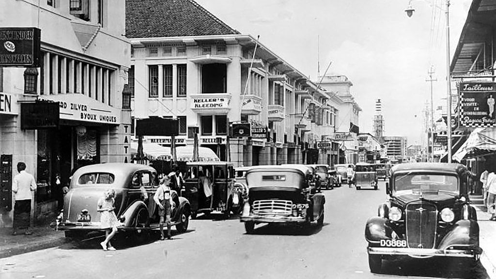
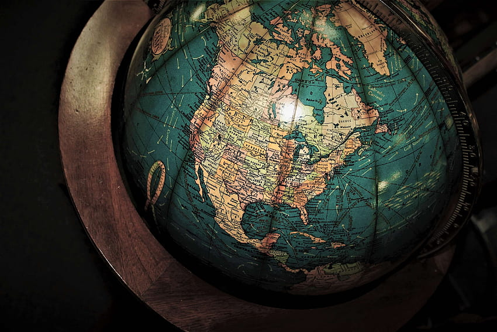
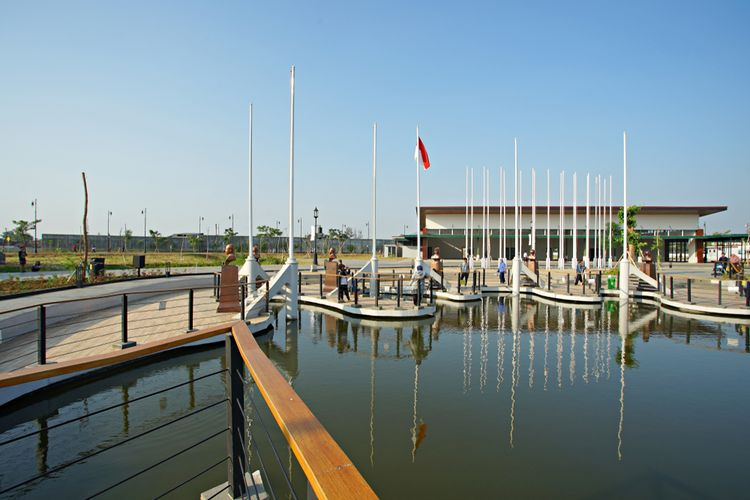
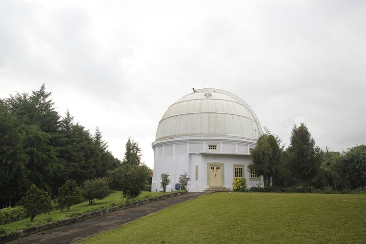
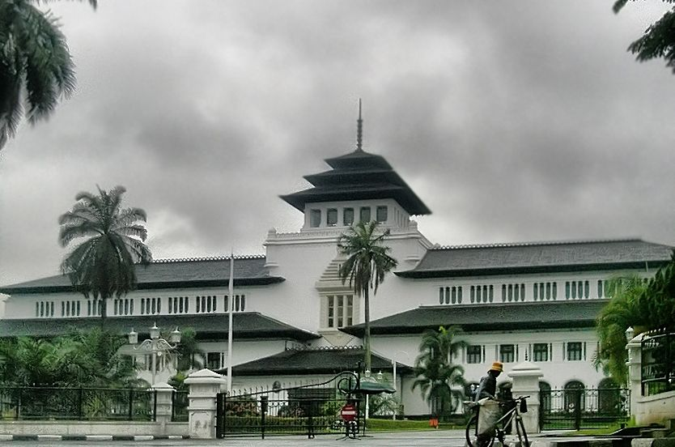

SEJARAH

Kota Bandung memiliki sejarah panjang yang dimulai dari sebuah desa kecil hingga menjadi kota metropolitan seperti sekarang.
Asal-usul nama "Bandung" diperkirakan berasal dari kata "bendung" atau "banding", yang merujuk pada bendungan atau danau yang terbentuk akibat aliran lava dari Gunung Tangkuban Perahu.
Bandung juga dikenal sebagai "Kota Kembang" karena keindahan alamnya dan dulunya dijuluki "Paris van Java" karena keindahannya yang mirip dengan kota Paris.
GEOGRAFIS

Kota Bandung, ibu kota Provinsi Jawa Barat, secara geografis terletak di tengah-tengah provinsi tersebut, tepatnya di antara 107°36' Bujur Timur dan 6°55' Lintang Selatan.
Kota ini berada pada ketinggian sekitar 768 meter di atas permukaan laut, dengan titik tertinggi mencapai 1.050 meter di bagian utara dan terendah 675 meter di bagian selatan.
Bandung juga dikenal sebagai "Cekungan Bandung" karena dikelilingi oleh pegunungan, seperti Gunung Tangkuban Perahu, Gunung Manglayang, dan Gunung Parahyangan.
WISATA

Kiara Artha Park adalah sebuah taman kota modern yang terletak di Bandung, Jawa Barat.
Taman ini didirikan untuk memperingati Konferensi Asia Afrika (KAA) tahun 1955, dengan area khusus yang disebut Taman Asia Afrika yang menampilkan patung-patung tokoh penggagas KAA dan bendera negara-negara peserta.
Taman ini menawarkan berbagai atraksi dan fasilitas, termasuk danau buatan dengan pertunjukan air mancur menari yang diiringi musik dan cahaya warna-warni, area bermain anak, serta berbagai pilihan kuliner.
Kiara Artha Park menjadi destinasi populer bagi masyarakat lokal maupun wisatawan untuk berekreasi dan bersantai.
Bocha

Observatorium Bosscha adalah sebuah institusi pendidikan dan penelitian astronomi yang terletak di Lembang, Jawa Barat, sekitar 15 km di utara Bandung.
Observatorium ini merupakan bagian dari Institut Teknologi Bandung (ITB) dan diresmikan pada tanggal 1 Januari 1923.
Gedung Sate

Gedung Sate adalah salah satu bangunan ikonik di Bandung, Jawa Barat, yang kini berfungsi sebagai Kantor Gubernur Jawa Barat. Dibangun antara tahun 1920-1924 oleh tim yang dipimpin Ir. J. Gerber, gedung ini awalnya bernama Gouvernements Bedrijven (GB) dan dirancang sebagai kompleks perkantoran pemerintah Hindia Belanda.
Nama "Gedung Sate" berasal dari ornamen enam tusuk sate di puncak menaranya, yang melambangkan biaya pembangunan tahap pertama sebesar enam juta Gulden.
Gedung ini memiliki gaya arsitektur hibrida, memadukan elemen Renaisans Italia, Moor Spanyol, dan arsitektur Asia seperti pura Bali, serta dipengaruhi ornamen Hindu dan Islam.
Di dalam gedung ini juga terdapat Museum Gedung Sate yang dapat dikunjungi wisatawan.